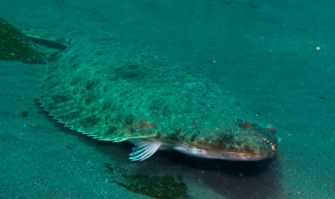
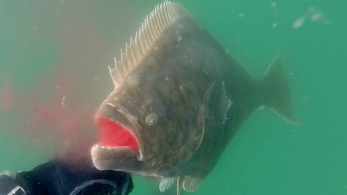
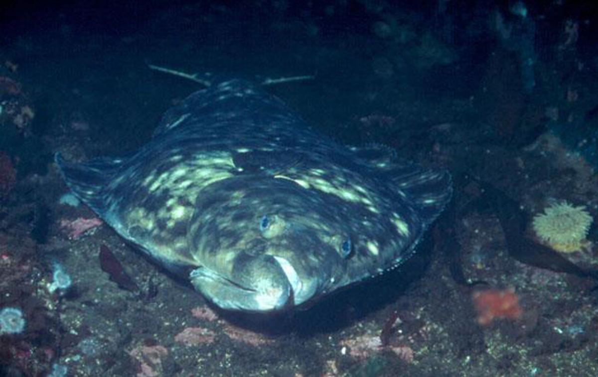

Halibut is a common name principally applied to the two flatfish in the genus Hippoglossus from the family of right-eye flounders. Halibut are demersal fish and are highly regarded as a food fish as well as a sport fish.The Pacific halibut is the world's largest flatfish.[5] The IGFA record was apparently broken off the waters of Norway in July 2013 by a 515-pound 8.6-foot fish. This was awaiting certification as of 2013.[6] In July 2014, a 482-pound Pacific halibut was caught in Glacier Bay, Alaska; this is, however, discounted from records because the halibut was shot and harpooned before being hauled aboard.
  